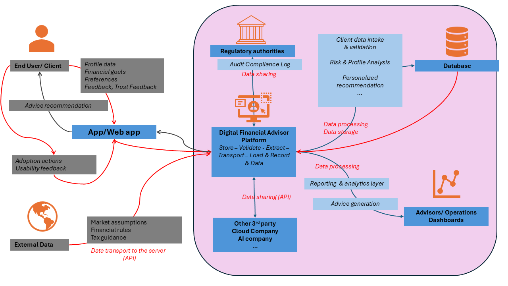

Digital Financial Advisor
Data Privacy by Design (PbD) analysis: dataset profiling, LINDDUN threat modeling, ARX anonymization, PETs solutions, and GDPR compliance.
Report Structure
| Section | Topic | Key Deliverable |
|---|---|---|
| §1 | Dataset Explanation | Column-by-column analysis, identifier classification |
| §2 | System Reference Diagram | High-level Data Flow Diagram (DFD) |
| §3 | LINDDUN Threat Modeling | 7 threat categories × hotspots |
| §4 | ARX Certificate | Anonymization output summary |
| §5 | ARX Decision Rationale | Input specs, transformations, privacy models |
| §6 | Privacy Solutions | PETs, Cryptography, OWASP mitigations |
| §7 | GDPR Compliance | Data inventory, RoPA, Privacy Policy, Consent |
📋 Column-by-Column Analysis
| Column | Data Type | Example | Category | Properties | Format | Other Specification (Direct vs Indirect Identifiers) |
|---|---|---|---|---|---|---|
| Name | Qualitative | Michael Cameron | Categorical | Person name; unique label for a respondent | Text string | Direct identifier |
| Age | Quantitative | 32 | Discrete | Numeric, whole-number age; non-negative | Integer | Indirect identifier |
| Location | Qualitative | Port Stephenton, Gabon | Categorical | Geographic location; composed of city/town + country | Text string | Indirect identifier |
| Gender | Qualitative | Male / Female / Non-binary | Categorical | Demographic category; no inherent order | Text string | Indirect identifier |
| Income | Quantitative | 8576.35 | Continuous | Monetary amount; can include decimals | Decimal / float | Sensitive attribute; not an identifier by itself, but may become indirect when combined |
| Assets | Quantitative | 63086.9 | Continuous | Monetary amount; can vary continuously | Decimal / float | Sensitive financial attribute |
| Debts | Quantitative | 3921.93 | Continuous | Monetary amount; zero is meaningful | Decimal / float | Sensitive financial attribute |
| Monthly Expenses | Quantitative | 3046.87 | Continuous | Monetary amount; can include decimals | Decimal / float | Sensitive financial attribute |
| Investment Preference | Qualitative | Fixed Deposits / Gold / Stocks | Categorical | Preference category; no natural order | Text string | Not an identifier |
| Type of Advice Sought | Qualitative | Tax Planning / Retirement Planning | Categorical | Advice-topic category; no natural order | Text string | Not an identifier |
| User Financial Goal | Qualitative | Tax Savings / Increase Savings | Categorical | Goal category; no natural order | Text string | Not an identifier |
| Action Based on Advice | Qualitative | Implemented / Not Implemented / Partially Implemented | Categorical, partly ordinal | Describes action outcome; ordered in practice by level of adoption | Text string | Not an identifier |
| Feedback on Advice | Qualitative | Very Unsatisfied / Neutral / Very Satisfied | Ordinal categorical | Ordered satisfaction scale | Text string | Not an identifier |
| App Usability Feedback | Qualitative | Unsatisfied / Satisfied / Very Satisfied | Ordinal categorical | Ordered usability rating | Text string | Not an identifier |
| Trust Level with Digital Advisor | Qualitative | Low / Moderate / High | Ordinal categorical | Ordered trust scale | Text string | Not an identifier |
Gender Distribution
Investment Preference
Type of Advice Sought
Trust Level with Advisor
🗺️ Data Flow Diagram — Digital Financial Advisor Platform

Key Data Flows & Privacy Boundaries
| Flow | Data Involved | Privacy Concern | Control |
|---|---|---|---|
| User → Onboarding | Name, Age, Location, Gender, Income, Assets | Direct + Quasi-ID collection | Consent gate, data minimization |
| Profile DB → Advisory Engine | Full financial profile | Sensitive financial exposure | ABAC, encryption at rest |
| Engine → Behavioral Log | Advice type, actions, feedback | Longitudinal behavioral profiling | TTL 90 days, pseudonymization |
| Behavioral Log → Anonymization | All quasi-identifiers | Re-identification risk | ARX k-anonymity + suppression |
| Anonymized → Analytics | Generalized attributes | Residual linkability | Differential Privacy queries only |
| System → Regulatory | RoPA, consent records | Compliance accountability | Audit logs, SCCs cross-border |
L — Linkability
Linking two items of interest without knowing the identity of the data subject
- 1.1 Hotspot: Data Collection for User Profile Registration
- 1.1.1 Name + Location + Age → quasi-identifier cluster → cross-dataset re-identification
- 1.1.2 Gender + Income + Investment Preference → behavioral fingerprint → linkable to public records
- 1.1.3 Financial Goal + Type of Advice Sought → behavioral signature → cross-session/platform linkage
- 1.2 Hotspot: Financial Data Processing & Storage
- 1.2.1 Income + Assets + Debts → precise financial profile → linkable to credit bureau / tax databases
- 1.2.2 Monthly Expenses + Investment Preference → spending pattern → linkable to bank/e-commerce transaction history
- 1.2.3 Debts ($0.00) + Action Based on Advice → distinct behavioral cluster → linkable across financial service providers
- 1.3 Hotspot: Feedback & Behavioral Data Collection
- 1.3.1 App Usability Feedback + Trust Level → behavioral-attitudinal profile → linkable to session logs / A/B testing records
- 1.3.2 Action Based on Advice + Feedback on Advice → longitudinal behavioral pattern → linkable to future interactions / support tickets
- 1.3.3 Repeated "Seeking Further Consultation" → persistent financial anxiety pattern → cross-session linkage
I — Identifiability
Sufficiently identifying the data subject within a dataset
- 2.1 Hotspot: Direct Identity Data Collection
- 2.1.1 Full Name field → direct identifier → especially with professional titles (Dr., Mrs., Mr.)
- 2.1.2 Name + Location → globally unique combination → small/remote locations amplify risk
- 2.1.3 Precise Income values (e.g., 8576.35) → quasi-identifier → matchable to payroll / tax records
- 2.2 Hotspot: Demographic Data Processing
- 2.2.1 Age + Gender + Location → sufficient for unique identification → especially in small territories
- 2.2.2 Rare Location (e.g., Bouvet Island, Cocos Islands) → near-unique by location alone → extremely small populations
- 2.2.3 Professional titles in Name field (DDS, MD) → cross-referenceable → professional licensing registries
- 2.3 Hotspot: Financial Profile Usage
- 2.3.1 Income + Assets + Debts + Monthly Expenses → unique financial fingerprint → re-identification even without name
- 2.3.2 Extreme financial value combinations → statistically rare profiles → identifiable via financial institution records
- 2.4 Hotspot: Advice & Behavioral Data
- 2.4.1 Advice Type + Investment Preference + Goal + Action → behavioral signature → cross-referenceable with advisor logs
- 2.4.2 High Trust + Very Unsatisfied feedback → psychologically distinctive group → identifiable via CRM systems
N — Non-Repudiation
Data subject cannot deny having performed an action or having certain attributes
- 3.1 Hotspot: User Action Logging
- 3.1.1 "Implemented" / "Not Implemented" records → permanent compliance log → usable in legal/insurance disputes
- 3.1.2 Timestamped advice compliance → non-deniable risk awareness → platform liability shield
- 3.1.3 "Seeking Further Consultation" → acknowledgment of advice received → user cannot deny awareness
- 3.2 Hotspot: Feedback Submission
- 3.2.1 Feedback on Advice → permanent attributable opinion → usable in regulatory audits
- 3.2.2 App Usability Feedback → non-repudiable interaction record → proves active platform engagement at specific time
- 3.2.3 Trust Level declaration → permanent trust statement → justifies automated decisions made on user's behalf
- 3.3 Hotspot: Financial Data Submission
- 3.3.1 Income + Assets + Debts submission → non-deniable financial disclosure → subpoenable in legal proceedings
- 3.3.2 Investment Preference declaration → binding risk appetite record → usable against user in high-risk investment disputes
D — Detectability
Distinguishing whether an item of interest exists, even without knowing content
- 4.1 Hotspot: User Presence Detection
- 4.1.1 Cryptocurrency/Stocks + High Trust → high-value target signal → detectable via API traffic patterns
- 4.1.2 Debts > 0 + Expenses ≈ Income → financially distressed profile → detectable without accessing values
- 4.1.3 "Debt Management" advice queries → financial distress signal → detectable via endpoint frequency metadata
- 4.2 Hotspot: Behavioral Pattern Detection
- 4.2.1 High retirement planning query frequency → demographic segment signal → detectable via encrypted traffic analysis
- 4.2.2 "Not Implemented" + "Very Unsatisfied" cluster → churn risk pattern → exploitable by competitors
- 4.2.3 Debts = 0.0 prevalence → debt-free / asset-rich demographic → detectable target for investment fraud
- 4.3 Hotspot: Profile Existence Detection
- 4.3.1 Name/location enumeration attack → profile existence confirmation → no content access needed
- 4.3.2 Consistent "Not Implemented" pattern → non-compliance flag → visible to third parties via data-sharing agreements
Di — Disclosure of Information
Exposing data to parties that should not have access
- 5.1 Hotspot: Data Collection & Storage
- 5.1.1 Full financial profile in single record → breach → enables identity theft + targeted fraud
- 5.1.2 Location + high Assets → geographic wealth disclosure → physical security risk (robbery, kidnapping)
- 5.1.3 Debts exposure → financial vulnerability revealed → harm from employers / family / creditors
- 5.2 Hotspot: Third-Party Data Sharing
- 5.2.1 Full dataset shared with AI models → violates data minimization → risk of training pipeline leakage
- 5.2.2 Small-group analytics reports → k-anonymity violation → individual-level data inferred from aggregates
- 5.2.3 Investment Preference → shared with partner platforms → commercial exploitation without consent
- 5.3 Hotspot: Feedback & Satisfaction Data
- 5.3.1 Negative feedback disclosed to identifiable advisors → chilling effect → discriminatory service risk
- 5.3.2 Trust Level → disclosed to marketing teams → enables targeted manipulation campaigns
- 5.3.3 App Usability Feedback + identity data → disclosed to developers → unnecessary personal data exposure
- 5.4 Hotspot: Data Transmission
- 5.4.1 Financial values in transit without E2E encryption → MITM attack risk → especially in high-risk regions
- 5.4.2 System logs recording advice queries → inadvertent financial distress disclosure → exposed to log aggregation services
U — Unawareness
Data subject unaware of collection, processing, or sharing of their data
- 6.1 Hotspot: Data Collection at Onboarding
- 6.1.1 Age + Location + Gender → quasi-identifier risk unknown to user → believes data is innocuous
- 6.1.2 Precise financial figures → unique financial fingerprint → persists after name removal, unknown to user
- 6.1.3 Professional titles in name → cross-referenceable with licensing databases → user unaware of exposure
- 6.2 Hotspot: Data Processing for Advice
- 6.2.1 Investment Preference + Goal + Advice Type → behavioral profiling → may affect credit scoring / insurance / ads
- 6.2.2 Financial data retention after account closure → ongoing risk → user unaware of retention duration
- 6.2.3 Multi-session action history → longitudinal behavioral profile → used for predictive modeling without awareness
- 6.3 Hotspot: Data Sharing
- 6.3.1 Investment Preference → shared with partner platforms → triggers targeted solicitations unknown to user
- 6.3.2 Feedback data → contributes to user scoring models → affects service quality / pricing without disclosure
- 6.3.3 Location in risk zones → triggers automated risk flags → affects advice quality without user knowledge
- 6.4 Hotspot: Behavioral Inference
- 6.4.1 Age + Income + Expenses → inferred sensitive attributes (health, relationship status) → not explicitly provided
- 6.4.2 Trust Level stored persistently → calibrates advisor autonomy → user unaware of downstream implications
NC — Non-Compliance
Processing not compliant with data protection laws or organizational policies
- 7.1 Hotspot: Data Collection
- 7.1.1 All fields collected simultaneously → violates data minimization → GDPR Art. 5(1)(c)
- 7.1.2 "Non-binary" Gender field → potential special category data → requires explicit consent → GDPR Art. 9
- 7.1.3 Users aged 18–19 → minor data collection → parental consent mechanisms likely absent → GDPR / COPPA
- 7.2 Hotspot: Data Storage & Retention
- 7.2.1 No defined retention periods → violates storage limitation → GDPR Art. 5(1)(e)
- 7.2.2 Financial data in plaintext CSV → no encryption → violates GDPR Art. 32 / PCI-DSS
- 7.2.3 Users across multiple jurisdictions → cross-border transfer without SCCs → violates GDPR Chapter V
- 7.3 Hotspot: Data Processing & Usage
- 7.3.1 No documented legal basis for processing financial data → GDPR Art. 6 violation
- 7.3.2 Automated advice without transparency / human review → violates GDPR Art. 22 (automated decision-making)
- 7.3.3 High-debt users profiled as high-risk without disclosure → violates CFPB / EU Consumer Credit Directive
- 7.4 Hotspot: Data Sharing & Disclosure
- 7.4.1 Profile sharing with third-party platforms without consent → violates GDPR Art. 6 / GLBA / PSD2
- 7.4.2 Feedback repurposed for marketing/scoring → violates purpose limitation → GDPR Art. 5(1)(b)
- 7.4.3 No mechanism for data subject rights → violates GDPR Art. 15–22 (Access, Erasure, Rectification)
ARX Certificate Summary
| Section | Line Item | Value / Description |
|---|---|---|
| PROJECT | Name | Digital Financial Advisor Dataset |
| Records | 500 user records | |
| Attributes | 15 data fields per user | |
| ATTRIBUTES | Identifying | Name, Location (fully removed) |
| Quasi-Identifying | Age, Gender, Income, Assets, Debts, Monthly Expenses (generalized) | |
| Sensitive | User Financial Goal, Type of Advice Sought, Investment Preference (l-Diversity protected) | |
| Insensitive | App Usability Feedback, Action Based on Advice, Feedback on Advice, Trust Level (retained) | |
| GENERALIZATION LEVELS | Age | Level 5/5 (fully generalized to ranges) |
| Gender | Level 0/2 (no generalization, retained as-is) | |
| Income | Level 1/3 (moderate: <50k, 50-100k, 100-200k, 200k+) | |
| Assets | Level 3/5 (high: <1M, 1M+) | |
| Debts | Level 4/4 (fully generalized: <100k, 100k+) | |
| Monthly Expenses | Level 4/4 (fully generalized: <10k, 10k+) | |
| PRIVACY MODELS | k-Anonymity | k=2 (each quasi-ID combination appears ≥2 times) |
| k-Map | k=5 (Name + quasi-ID combination appears ≥5 times) | |
| l-Diversity (Goal) | l=2 (≥2 distinct Financial Goals per quasi-ID group) | |
| l-Diversity (Preference) | l=2 (≥2 distinct Investment Preferences per quasi-ID group) | |
| Disclosure Privacy | delta=1.0 (maximum protection for Type of Advice Sought) | |
| RISK THRESHOLDS | Prosecutor Risk | 0.5 (≤50% re-identification if attacker knows 1 person) |
| Journalist Risk | 0.2 (≤20% re-identification if attacker knows quasi-ID) | |
| Marketer Risk | 0.2 (≤20% re-identification if attacker knows partial quasi-ID) | |
| SEARCH SPACE | Total Solutions | 10,800 possible anonymization schemes |
| Materialized | 10,675 schemes evaluated (98.8%) | |
| TRANSFORMATION RESULTS | Anonymity Status | Yes - Successfully anonymized |
| Information Loss | 54.04% (minimum and maximum equal - optimal solution found) | |
| Information Retained | 45.96% utility preserved | |
| Output Records | 500 (no records deleted) | |
| Output Attributes | 15 (no columns deleted) | |
| Data Integrity | SHA-256: 37a2f3e3772644387af9489af2d7e692330e2800da97f3e493b75cb1618c13d0 |
Attribute Classification in ARX
| ARX Category | Attributes | Data Type | Treatment |
|---|---|---|---|
| Identifying | Name, Location | String | Fully suppressed (*) |
| Quasi-Identifying | Age, Gender, Income, Assets, Debts, Monthly Expenses | Integer / Decimal / String | Generalized to ranges |
| Sensitive | User Financial Goal, Type of Advice Sought, Investment Preference | String | l-Diversity protection applied |
| Insensitive | App Usability Feedback, Action Based on Advice, Feedback on Advice, Trust Level | String | Retained as-is |
Generalization Hierarchies
| Attribute | Height | Min Level | Max Level | Generalization Path |
|---|---|---|---|---|
| Age | 6 | 0 | 5 | 18, 19, 20... → 18-25, 26-35, 36-50, 51-65, 65+ → 18-65 → * |
| Gender | 3 | 0 | 2 | Male, Female, Non-binary → Male/Female, Non-binary → * |
| Income | 4 | 0 | 3 | 75000, 80000... → <50k, 50-100k, 100-200k, 200k+ → <100k, 100-200k, 200k+ → * |
| Assets | 6 | 0 | 5 | 250000, 500000... → <100k, 100-500k, 500k-1M, 1M+ → <1M, 1M+ → * |
| Debts | 5 | 0 | 4 | 45000, 50000... → <25k, 25-50k, 50-100k, 100k+ → <100k, 100k+ → * |
| Monthly Expenses | 5 | 0 | 4 | 3500, 4000... → <2k, 2-5k, 5-10k, 10k+ → <10k, 10k+ → * |
| Location | 69 | 0 | 68 | New York, London... → USA, UK... → North America, Europe... → * |
| Name | 20 | 0 | 19 | John Smith, Jane Doe... → Partial names → * |
Applied Generalization Scheme
| Attribute | Applied Level | Status | Result |
|---|---|---|---|
| Age | 5/5 | Fully Generalized | All ages converted to ranges or suppressed |
| Gender | 0/2 | No Generalization | Male, Female, Non-binary retained |
| Income | 1/3 | Moderate Generalization | <50k, 50-100k, 100-200k, 200k+ |
| Assets | 3/5 | High Generalization | <1M, 1M+ |
| Debts | 4/4 | Fully Generalized | <100k, 100k+ or suppressed |
| Monthly Expenses | 4/4 | Fully Generalized | <10k, 10k+ or suppressed |
| Name | 20/20 | Fully Suppressed | * (completely removed) |
| Location | 68/68 | Fully Suppressed | * (completely removed) |
Privacy Models Applied
| Privacy Model | Threshold | Definition | Protection |
|---|---|---|---|
| k-Anonymity | k=2 | Each quasi-ID combination appears ≥2 times | Prevents singling out individuals |
| k-Map | k=5 | Name + quasi-ID combination appears ≥5 times | Higher protection than k-anonymity |
| l-Diversity (Goal) | l=2 | ≥2 distinct User Financial Goals per quasi-ID group | Prevents inferring financial goals |
| l-Diversity (Preference) | l=2 | ≥2 distinct Investment Preferences per quasi-ID group | Prevents inferring investment behavior |
| Disclosure Privacy | delta=1.0 | Maximum protection for Type of Advice Sought | Prevents inferring advice type from quasi-ID |
Risk Assessment
| Risk Type | Threshold | Attacker Profile | Re-identification Probability |
|---|---|---|---|
| Prosecutor Risk | 0.5 | Attacker knows full identity (name, address, age) | ≤50% |
| Journalist Risk | 0.2 | Attacker knows quasi-ID (age, gender, income) | ≤20% |
| Marketer Risk | 0.2 | Attacker knows partial quasi-ID (age, income) | ≤20% |
Configuration Settings
| Setting | Value | Meaning |
|---|---|---|
| Attribute Weights | 0.5 (all) | All attributes equally important (balanced) |
| Assume Monotonicity | No | Information loss can increase/decrease non-uniformly |
| Suppression Limit | 1.0 (100%) | Allow deletion of up to 100% of records if necessary |
| Loss Function | Geometric Mean | Balanced trade-off between privacy and utility |
Search Space Analysis
| Metric | Value | Interpretation |
|---|---|---|
| Total Search Space | 10,800 | Total possible anonymization schemes |
| Materialized Solutions | 10,675 | 98.8% of schemes evaluated by ARX |
| Optimal Solution Found | Yes | ARX identified best privacy-utility trade-off |
Transformation Results
| Metric | Value | Status |
|---|---|---|
| Anonymity Achieved | Yes | Dataset successfully anonymized |
| Information Loss (Min) | 54.04% | Minimum information loss to achieve privacy |
| Information Loss (Max) | 54.04% | No better solution exists (optimal) |
| Information Retained | 45.96% | Utility preserved for analysis |
| Output Records | 500 | No records deleted (1:1 mapping) |
| Output Attributes | 15 | No columns deleted (1:1 mapping) |
| Data Integrity Checksum | 37a2f3e3772644387af9489af2d7e692330e2800da97f3e493b75cb1618c13d0 | SHA-256 for verification |
⚙️ Data Classification Strategy
| Category | Attributes | Rationale & Example | Risk Level | ARX Decision |
|---|---|---|---|---|
| Name |
Direct identifier uniquely identifying an individual. No analytical value when retained. Enables immediate re-identification without any auxiliary data.
Example: Michael Cameron, Tiffany Silva
|
CRITICAL | Suppressed | |
| Location |
City + Country combination creates near-unique geographic fingerprint. Rare territories (Bouvet Island, Cocos Islands) enable direct re-identification. 500 unique locations for 500 records = 100% uniqueness.
Example: Port Stephenton, Gabon | Gabrielstad, Bouvet Island
|
CRITICAL | Suppressed | |
|
Quasi-ID (Generalized) |
Age |
Exact age (53 unique values, 18–70) enables re-identification when combined with Gender + Income. Generalized into 3 age brackets: [18–29], [30–49], [50+] to achieve k-anonymity ≥ 3.
Example: 32 → Age Bracket [30–49] | 67 → Age Bracket [50+]
|
HIGH | Generalized |
|
Quasi-ID (Generalized) |
Gender |
3-level categorical (Male, Female, Non-binary). "Non-binary" is rare (~167 records) and sensitive under GDPR Art. 9. Generalized to binary or suppressed for rare combinations. Quasi-identifier when combined with Income + Age.
Example: Non-binary → Suppressed in rare profiles | Male/Female → Retained
|
HIGH | Generalized |
|
Quasi-ID (Generalized) |
Income |
Precise income (500 unique values, range 2000–9970) is matchable to payroll/tax records. Generalized into 3 income brackets: Low [2000–5000), Mid [5000–8000), High [8000+] to reduce dimensionality and prevent linkage attacks.
Example: 8576.35 → Income Bracket [8000+] | 3939.77 → Income Bracket [2000–5000)
|
HIGH | Generalized |
|
Quasi-ID (Generalized) |
Assets |
High-value continuous variable (500 unique values, range 5609–99922). Creates rare wealth profiles. Generalized into 2 brackets: Moderate [5609–80000), High [80000+] to preserve wealth-tier analytics while reducing re-identification risk.
Example: 63086.9 → Assets Bracket [Moderate] | 99921.61 → Assets Bracket [High]
|
HIGH | Generalized |
|
Quasi-ID (Suppressed) |
Debts |
High-granularity continuous variable (242 unique values). 259/500 records have Debts=0 (distinctive marker). Combined with Income + Assets + Age, creates 100% unique fingerprints. Fully suppressed to prevent behavioral re-identification.
Example: 3921.93, 0, 2039.2 → All suppressed (financial vulnerability signal)
|
HIGH | Suppressed |
|
Quasi-ID (Suppressed) |
Monthly Expenses |
Highly granular continuous variable (500 unique values, range 507–4994). Linkable to bank/e-commerce transaction history. Spending patterns create behavioral fingerprints. Fully suppressed to prevent linkage attacks and behavioral profiling.
Example: 3046.87, 2654.24, 4059.88 → All suppressed (spending fingerprint)
|
HIGH | Suppressed |
| Sensitive | User Financial Goal |
Reveals personal financial objectives and vulnerabilities. Not a direct identifier but highly sensitive under GDPR Art. 9. High analytical value for segmentation. Retained but encrypted at rest (AES-256-GCM) and in transit (TLS 1.3). Access restricted to authorized analysts with immutable audit logging.
Example: Tax Savings, Debt Reduction, Retirement Fund Building
|
HIGH | Encrypted |
| Sensitive | Type of Advice Sought |
Indicates financial needs and vulnerabilities (Debt Management, Investment Strategy, Tax Planning). Sensitive under GDPR but essential for product analytics. Encrypted (AES-256-GCM) and access-controlled. Aggregated only at segment level. Real-time audit alerts on access.
Example: Tax Planning, Retirement Planning, Debt Management
|
HIGH | Encrypted |
| Sensitive | Investment Preference |
Reveals risk appetite and investment philosophy. May indirectly disclose political/religious views (e.g., Islamic finance, ESG preferences). Retained for portfolio analysis but encrypted (AES-256-GCM). Access limited to compliance-trained staff. Requires explicit consent per GDPR Art. 7.
Example: Cryptocurrency, Bonds, Real Estate, Gold, Mutual Funds
|
HIGH | Encrypted |
| Insensitive | Action Based on Advice |
Describes action outcome (Implemented, Not Implemented, Partially Implemented, Seeking Further Consultation). No personal sensitivity. Low re-identification risk. Retained for product engagement metrics.
Example: Implemented, Partially Implemented, Not Implemented
|
LOW | Retained |
| Insensitive | Feedback on Advice |
Ordinal satisfaction scale (Very Unsatisfied, Unsatisfied, Neutral, Satisfied, Very Satisfied). No personal sensitivity. Low re-identification risk. Retained for satisfaction analytics and quality metrics.
Example: Very Satisfied, Neutral, Very Unsatisfied
|
LOW | Retained |
| Insensitive | App Usability Feedback |
Ordinal usability rating (Unsatisfied, Neutral, Satisfied, Very Satisfied). No personal sensitivity. Low re-identification risk. Retained for UX improvement and product analytics.
Example: Very Satisfied, Unsatisfied, Neutral
|
LOW | Retained |
| Insensitive | Trust Level with Digital Advisor |
Ordinal trust scale (Low, Moderate, High). No personal sensitivity. Low re-identification risk. Retained for trust analytics and advisor performance metrics.
Example: High, Low, Moderate
|
LOW | Retained |
Privacy Models Applied
- Every quasi-ID combination appears ≥5 times
- Prevents singling out individuals
- Applied to: Age + Gender + Income + Assets
- 30 records suppressed where k<5 unavoidable
- Sensitive attrs (Financial Goal, Advice Type) maintain diversity within equivalence classes
- Prevents attribute disclosure attacks
- Verified through ARX solution explorer
- Sensitive attrs (Investment Pref, Advice Type, Goal) retained without generalization
- Insensitive behavioral attrs fully retained
- Balance: privacy protection vs. analytical utility
- 6% suppression rate (30/500) — acceptable threshold
- Targets outliers: rare locations, extreme financial values
- Preserves 94% of dataset for downstream analytics
Solutions by LINDDUN Threat Category
| Threat | Key PET/Technology Solutions | Regulatory References |
|---|---|---|
| Linkability | k-Anonymity / l-DiversityDifferential PrivacyPseudonymizationZero-Knowledge ProofsSynthetic Data (GAN/VAE) | GDPR Art. 5, 25; NIST SP 800-188 |
| Identifiability | TokenizationSecure Multi-Party ComputationARX ToolGeo-MaskingData Sanitization | GDPR Art. 25; OWASP A02 |
| Non-Repudiation | Anonymous CredentialsCommitment SchemesZero-Knowledge ProofsSelective Audit Logging | GDPR Art. 17; W3C VC |
| Detectability | Traffic PaddingHomomorphic Encryption / ORAMEndpoint GeneralizationDifferential Privacy Query Logs | OWASP API Top 10 |
| Disclosure | AES-256-GCMField-Level EncryptionFederated LearningDP-SGDTLS 1.3 with ESNI | GDPR Art. 32; PCI-DSS v4.0; OWASP A01,A02 |
| Unawareness | Privacy Transparency NoticesExplainable AI DashboardConsent Management PlatformPrivacy Dashboard | GDPR Art. 13,15,22; CCPA |
| Non-Compliance | Record of Processing ActivitiesStandard Contractual ClausesTransfer Impact AssessmentHuman-in-the-Loop ReviewData Subject Rights Portal | GDPR Art. 5–22,30; COPPA; GLBA; PCI-DSS |
Detailed Sub-Threat Solutions Matrix
| LINDDUN Threat | Sub-Threat | Specific Solution | Implementation Details | Regulatory Reference |
|---|---|---|---|---|
| Linkability (L) | Name + Location + Age quasi-identifier cluster | k-Anonymity / l-Diversity | Generalize Age into ranges (18–25, 26–35, etc.); coarsen Location to country-level only; ensure k≥5 for any quasi-identifier combination | GDPR Art. 5 (Data Minimization); NIST SP 800-188 |
| Income + Assets + Debts linkable financial profile | Differential Privacy Data Perturbation | Add calibrated Laplace noise (ε=0.5) to numerical fields before storage or export; round to nearest $500 bracket; apply micro-aggregation (k≥5) | GDPR Art. 32 (Security); Apple DP whitepaper | |
| Behavioral fingerprint (Investment Preference + Goal) | Pseudonymization with Rotating Tokens | Replace Name with deterministic UUID at ingestion; use HMAC-SHA256(UUID + secret salt) for behavioral logs; decouple behavioral data from identity in storage | GDPR Art. 4(5) (Pseudonymization); GDPR Art. 25 (Privacy by Design) | |
| Cross-session linkage via advice patterns | Session Unlinkability & Ephemeral Tokens | Use ephemeral session tokens (valid 30 minutes); avoid persistent user-level IDs in logs; rotate tokens on each request; store only anonymized event summaries | GDPR Art. 5(1)(e) (Storage Limitation) | |
| Identifiability (I) | Full Name as direct identifier | Tokenization with HSM Vault | Replace Name field with UUID at ingestion; store mapping in HSM-protected vault (HashiCorp Vault / AWS KMS) with role-based access control; audit all vault access | GDPR Art. 25 (Privacy by Design); OWASP A02:2021 |
| Rare locations (Bouvet Island, Cocos Islands) near-unique | Location Generalization & Suppression | Store only country or region; suppress sub-national location for populations <10,000; map rare territories to "Other/Small Territory" category | GDPR Art. 5(1)(c) (Data Minimization) | |
| Professional titles (MD, DDS) in Name field | Input Sanitization & Whitelist Validation | Strip/normalize honorifics at data entry layer; validate Name field against whitelist (reject Dr., Mrs., MD, DDS); enforce via API schema validation | OWASP A03:2021 (Injection) | |
| Precise financial values unique fingerprint | Numeric Rounding & Micro-Aggregation | Round Income/Assets/Debts to nearest $100 bracket; apply micro-aggregation (k≥5) for analytics; expose only aggregate statistics, not individual records | GDPR Art. 32 (Security) | |
| Non-Repudiation (N) | Permanent compliance logs usable in legal disputes | Selective Audit Logging with TTL | Log only anonymized event types (e.g., "ADVICE_GENERATED"), not personal data content; enforce TTL 90 days; use HMAC for log integrity; maintain separate audit database | GDPR Art. 17 (Right to Erasure); GDPR Art. 5(1)(f) (Integrity) |
| Trust Level declaration used to justify automated decisions | Explainable AI with Decision Disclosure | For each advice recommendation, provide user-facing explanation: "Based on: Debt-to-Income ratio (45%), Monthly Expenses trend (30%), Trust Level (25%)"; use SHAP/LIME for feature attribution | GDPR Art. 22 (Automated Decision-Making); GDPR Art. 13(2)(f) | |
| Financial disclosure subpoenable in legal proceedings | Zero-Knowledge Proofs (ZKP) | Allow eligibility verification (e.g., "income > $50k threshold") without revealing exact value; use zk-SNARKs for privacy-preserving compliance checks | GDPR Art. 32 (Security) | |
| Detectability (D) | API traffic patterns reveal user type (Crypto + High Trust) | Traffic Obfuscation & Padding | Normalize API request sizes; inject dummy requests during low-traffic periods; vary response time by ±100ms; use constant-time algorithms | OWASP A09:2021 (Logging Failures); OWASP API Top 10 – API4 |
| Debt distress signal detectable via endpoint frequency | Encrypted Metadata with TLS 1.3 ESNI/ECH | Use TLS 1.3 with Encrypted SNI (ESNI) / Encrypted Client Hello (ECH); avoid revealing query categories in URL paths (e.g., never use /api/debt-advice); encrypt all metadata | GDPR Art. 32 (Security) | |
| Profile existence confirmation via enumeration | Anti-Enumeration Controls | Return identical HTTP 200 responses for existing/non-existing profiles; vary response time by ±100ms; implement rate limiting (100 req/min per IP); require CAPTCHA after 50 failed lookups | OWASP A01:2021 (Broken Access Control); OWASP API3 | |
| Disclosure (D) | Full financial profile in single CSV record | Field-Level Encryption with AES-256-GCM | Encrypt sensitive columns (Income, Assets, Debts) with AES-256-GCM; use separate encryption keys per user; enable per-user access control; rotate keys quarterly | GDPR Art. 32 (Security); PCI-DSS v4.0 Req. 3 |
| Location + high Assets physical security risk | Data Minimization at Collection | Do not collect precise sub-city location; enforce via schema validation; store only country/region; allow users to opt-in to precise location only for tax/regulatory use cases | GDPR Art. 5(1)(c) (Data Minimization) | |
| Dataset shared with AI models training pipeline leakage | Federated Learning with Secure Enclaves | Train models locally on-device or in Intel SGX / ARM TrustZone enclaves; transmit only model gradients (not raw data); use DP-SGD to add noise to gradients; never transmit raw financial records | GDPR Art. 32 (Security); GDPR Art. 5(1)(f) (Integrity) | |
| Third-party Investment Preference sharing | Consent Management Platform (CMP) | Granular opt-in per data use purpose; separate toggles for Analytics, Product Offers, Research; revocable at any time; store consent timestamps for non-repudiation; implement age-aware consent for minors | GDPR Art. 7 (Conditions for Consent); GDPR Art. 13–14 (Transparency) | |
| Unawareness (U) | Users unaware of quasi-identifier risk | Transparency Notices at Point of Collection | Inline tooltips explaining why each field is collected and its privacy risk; link to full Privacy Policy; use plain language; no consent walls | GDPR Art. 13–14 (Transparency); NIST Privacy Framework – Communicate-P |
| Financial data retained after account closure | Automated Data Lifecycle Management | Define retention periods per field type (Active data: 5 years; Feedback: 2 years; Logs: 90 days); trigger deletion workflows on account closure; confirm completion within 30 days | GDPR Art. 17 (Right to Erasure); GDPR Art. 5(1)(e) (Storage Limitation) | |
| Behavioral profiling affects credit/insurance without awareness | Privacy Dashboard with Data Transparency | User-accessible view of all stored data, inferred attributes, downstream uses, and retention periods; downloadable data export; one-click consent management | GDPR Art. 15 (Access); GDPR Art. 13(2)(f) (Explanation) | |
| Location triggers automated risk flags silently | Algorithmic Transparency & Decision Disclosure | Disclose when location-based rules affect advice quality or eligibility; provide user-facing explanation of decision logic; offer human review option | GDPR Art. 22 (Automated Decision-Making) | |
| Non-Compliance (N) | All fields collected simultaneously data minimization violation | Privacy by Design Schema Review | API schema validation enforces collection of only required fields per use case; tag each field with approved use cases; quarterly audit of unused fields; conduct DPIA before adding new fields | GDPR Art. 5(1)(c) (Data Minimization); GDPR Art. 35 (DPIA) |
| Gender "Non-binary" potential special category | Explicit Consent Flow for Sensitive Data | Separate consent checkbox for sensitive demographic fields (Gender, Age); allow "Prefer not to say" option; do not make optional fields mandatory for service access | GDPR Art. 9 (Special Categories); GDPR Art. 7 (Consent) | |
| Users aged 18–19 minor protection gap | Age Verification Gate with Parental Consent | Flag users ≤18 for enhanced consent workflow; implement parental consent mechanism; collect parent email; require parental approval before data processing; maintain audit log | GDPR Art. 8 (Children's Consent) | |
| Plaintext CSV storage GDPR Art. 32 violation | Encryption at Rest & in Transit | AES-256-GCM for storage; TLS 1.3 for transit; key management via AWS KMS / HashiCorp Vault; automatic key rotation (quarterly); encrypt all backups; test decryption quarterly | GDPR Art. 32 (Security); PCI-DSS v4.0 Req. 3 & 4 | |
| No legal basis documented | Record of Processing Activities (RoPA) | Document legal basis per processing activity (consent / contract / legal obligation); maintain detailed RoPA for each processing (User Registration, Financial Assessment, Advice Generation, etc.); review quarterly | GDPR Art. 30 (Records of Processing Activities) | |
| Automated advice without human review | Human-in-the-Loop (HITL) Review | For high-impact decisions (debt restructuring, high-risk investments), require advisor confirmation; maintain audit log of human reviews; provide users with right to request human review (Art. 22) | GDPR Art. 22 (Automated Decision-Making) | |
| No data subject rights mechanism | Data Subject Rights Portal (Art. 15–22) | Implement self-service endpoints: Access (Art. 15 – download data), Erasure (Art. 17 – delete account), Rectification (Art. 16 – edit data), Portability (Art. 20 – export), Object (Art. 21 – opt-out), Automated Decision Review (Art. 22); respond within 30 days; no fees | GDPR Art. 15–22 (Data Subject Rights) |
Key Technical Solutions — Deep Dive
- Implementation: Replace Full Name with deterministic UUID (e.g., SHA-256(Name + salt)) at data entry point
- Identity Vault: Maintain Name↔UUID mapping in HSM-protected, access-controlled database with role-based permissions
- Internal References: Use HMAC-SHA256(UUID + secret salt) for unlinkable behavioral logs
- Audit Trail: Log all identity vault access with timestamp, user ID, and purpose; TTL 90 days
- Regulatory: GDPR Art. 25 (Privacy by Design); OWASP A02:2021 (Cryptographic Failures)
- Noise Calibration: Add Laplace noise with privacy budget ε=0.5 (high privacy) before analytics storage or export
- Numeric Rounding: Round Income/Assets/Debts to nearest $500 bracket; apply micro-aggregation (k=5 minimum) for analytics queries
- Query Protection: Expose financial data only through DP-protected aggregate endpoints; block row-level queries
- Federated Analytics: Train statistical models locally on-device; transmit only aggregated gradients (DP-SGD)
- Regulatory: NIST SP 800-188; Apple Differential Privacy whitepaper; GDPR Art. 32 (Security)
- Coarsening Strategy: Store only country/region code (ISO 3166-1 alpha-2); never collect city-level precision
- Rare Territory Suppression: Territories with population <10,000 (Bouvet Island, Cocos Islands) → "Other/Small Territory" category
- Geo-Masking: For analytics, apply random offset within administrative region (±50km) to prevent re-identification
- Consent-Gated Precision: Allow users to opt-in to precise location only for tax jurisdiction or regulatory compliance use cases
- Regulatory: GDPR Art. 5 (Data Minimization); NIST Privacy Framework – Collect-C1
- Vault Architecture: Replace Income/Assets/Debts with cryptographic tokens (e.g., HashiCorp Vault, AWS Payment Cryptography)
- Token Format: Format-preserving encryption (FPE) to maintain numeric properties for sorting/filtering without decryption
- Federated Joins: Never join all financial fields in single query; use Secure Multi-Party Computation (SMPC) for cross-institutional analytics
- Key Rotation: Rotate tokenization keys quarterly; maintain audit log of key versions
- Regulatory: PCI-DSS v4.0 Requirement 3 (Protect Stored Data); OWASP A04:2021 (Insecure Deserialization)
- TTL Policy: Behavioral logs (Action, Feedback, App Usability Feedback) expire after 90 days; automatic deletion via scheduled job
- Aggregation Retention: Only aggregated summaries (e.g., "user completed 5 actions") retained long-term (5 years for regulatory audit)
- Unlinkable Audit Logs: Use blind signatures (Chaum scheme) for event logging so individual events cannot be linked to user identity
- Selective Logging: Log only anonymized event types (e.g., "ADVICE_GENERATED") and outcomes; never log personal data content
- Regulatory: GDPR Art. 17 (Right to Erasure); GDPR Art. 5(1)(e) (Storage Limitation)
- Generative Models: Replace Monthly Expenses with GAN/VAE synthetic equivalents; preserve statistical distributions without individual records
- Validation: Ensure synthetic data passes differential privacy tests (e.g., membership inference attack resistance)
- Tools: Gretel.ai (cloud), SDV library (open-source), CTGAN for tabular data
- Use Case: Share synthetic dataset with analytics partners; original data never leaves organization
- Regulatory: ENISA PETs Guidelines 2022; GDPR Art. 25 (Privacy by Design)
- Identical Responses: Return same HTTP response (200 OK) for existing and non-existing user profiles; vary response time by ±100ms
- Traffic Padding: Normalize API request sizes; inject dummy requests during low-traffic periods to mask user behavior patterns
- Encrypted Metadata: Use TLS 1.3 with ESNI/ECH to hide SNI; avoid revealing query categories in URL paths (e.g., /api/debt-advice)
- Rate Limiting: Implement per-IP rate limits (100 req/min) + CAPTCHA after 50 failed profile lookups
- Regulatory: OWASP API Security Top 10 – API4 (Unrestricted Resource Consumption), API3 (Broken Object Property Level Authorization)
- On-Device Training: Train recommendation models locally on user's device; transmit only model gradients (not raw data) to central server
- Secure Enclave: Process sensitive financial data in Intel SGX / ARM TrustZone enclaves; attestation ensures code integrity
- Gradient Aggregation: Use DP-SGD to add noise to gradients before aggregation; prevents model inversion attacks
- No Raw Data Sharing: Never transmit Income, Assets, Debts to ML pipeline; only derived risk scores
- Regulatory: GDPR Art. 32 (Security); GDPR Art. 5(1)(f) (Integrity and Confidentiality)
- Decision Disclosure: For each automated advice recommendation, provide user-facing explanation: "Your debt-restructuring advice is based on: Debt-to-Income ratio (45%), Monthly Expenses trend (30%), Trust Level (25%)"
- Feature Attribution: Use SHAP values or LIME to show which data fields most influenced the decision
- Audit Trail: Maintain immutable log of all model versions, training data snapshots, and decision outcomes
- Human Review Trigger: Flag high-impact decisions (debt restructuring, high-risk investments) for advisor confirmation
- Regulatory: GDPR Art. 22 (Automated Decision-Making); GDPR Art. 13(2)(f) (Explanation of Logic)
- Granular Consent: Separate toggles per data category (Gender, Investment Preference) and per processing purpose (Analytics, Product Offers, Research)
- Layered Notices: Short notice at collection ("Why do we ask?") + full Privacy Policy linked; avoid consent walls
- Revocation: One-click consent withdrawal in Privacy Dashboard; immediate data processing suspension
- Consent Versioning: Store timestamp, user ID, consent version, and IP address for non-repudiation
- Age-Aware: Users aged 18–19 flagged for enhanced consent; parental consent workflow for minors (Art. 8 GDPR)
- Regulatory: GDPR Art. 7 (Conditions for Consent); GDPR Art. 13–14 (Transparency)
- Access (Art. 15): Download all personal data in structured, machine-readable format (CSV/JSON) within 30 days
- Rectification (Art. 16): Edit incorrect fields (e.g., Age, Location); changes logged with timestamp
- Erasure (Art. 17): Delete account and all associated data; trigger automated deletion workflow; confirm completion within 30 days
- Portability (Art. 20): Export data in interoperable format; support transfer to competing services
- Object (Art. 21): Opt-out of legitimate interest processing (e.g., compliance tracking); service continues with reduced personalization
- Automated Decision Review (Art. 22): Request human review of any algorithmic decision; advisor will manually verify recommendation
- Implementation: Self-service portal + email support; no fees; audit all requests
- Collection Gate: API schema validation enforces collection of only required fields per use case (e.g., onboarding requires Name, Age, Country; Investment Preference optional)
- Purpose Limitation: Each field tagged with approved use cases; queries outside approved purposes rejected at database layer
- Data Minimization Audit: Quarterly review of all collected fields; remove unused fields (e.g., if App Usability Feedback unused for 6 months, delete)
- Privacy Impact Assessment: Before adding new fields, conduct DPIA; document risks and mitigations
- Regulatory: GDPR Art. 5(1)(c) (Data Minimization); GDPR Art. 35 (Data Protection Impact Assessment)
- At Rest: AES-256-GCM for all personal data in database; key management via AWS KMS / HashiCorp Vault with automatic key rotation (quarterly)
- In Transit: TLS 1.3 mandatory for all API endpoints; disable TLS 1.2 and below; enforce HSTS header (max-age=31536000)
- Field-Level Encryption: Sensitive columns (Income, Assets, Debts) encrypted with user-specific keys; enable per-user access control
- Backup Encryption: All database backups encrypted with separate master key; test decryption quarterly
- Regulatory: GDPR Art. 32 (Security); PCI-DSS v4.0 Requirements 3 & 4
- Transfer Mechanism: Use EU Standard Contractual Clauses (Module Two: Controller-to-Processor) for all data transfers to non-EU processors
- Supplementary Measures: Document encryption, pseudonymization, and access controls as supplementary safeguards (per Schrems II ruling)
- Transfer Impact Assessment: Assess third-country legal frameworks (e.g., US surveillance laws); if inadequate, implement technical mitigations (e.g., encrypt data before transfer)
- Processor Audit: Annual audit of processor's security controls; require SOC 2 Type II certification
- Regulatory: GDPR Chapter V (Transfers); GDPR Art. 46 (Appropriate Safeguards); EDPB Guidelines 2/2018
- Documentation: Maintain detailed RoPA for each processing activity (User Registration, Financial Assessment, Advice Generation, etc.)
- Fields: Name of processing, purpose, legal basis, data categories, recipients, retention period, security measures, DPA references
- Updates: Review and update RoPA quarterly; maintain version history
- Accessibility: Provide RoPA to supervisory authorities upon request (GDPR Art. 30)
- Regulatory: GDPR Art. 30 (Records of Processing Activities)
📋 7.1 — Data Inventory (PII Spreadsheet)
| Personally Identifiable Information (PII) | Purpose (Legal Basis) | Retention | Repository | |
|---|---|---|---|---|
| Direct Identifiers | Quasi-Identifiers | |||
| Name (Full name) | Age, Gender, Location | Service provision (Contract — Art. 6(1)(b)) | Service duration + 30 days | User Profile DB |
| — | Income, Assets, Debts, Monthly Expenses | Financial advisory (Contract — Art. 6(1)(b)) | Service duration + 90 days | Profile DB, Backups |
| — | Investment Pref, Advice Type, Financial Goal | Personalized advice (Consent — Art. 6(1)(a)) | 90 days TTL | Behavioral Log DB |
| — | Action, Feedback, Trust Level | Service improvement (Legitimate interest — Art. 6(1)(f)) | Aggregated only after 90 days | Log DB, Logfiles |
📝 7.2 — Data Processing Register (RoPA — Art. 30)
| Processing Activity | Ref | Created | Purpose | Special Category? |
|---|---|---|---|---|
| User Registration & Profile Creation | DFA-001 | 2025-01-01 | Create user account, collect financial profile for advisory service | No |
| Financial Advisory Generation | DFA-002 | 2025-01-01 | Generate personalized financial advice based on user profile | No (financial = sensitive) |
| Behavioral Analytics | DFA-003 | 2025-01-01 | Analyze user actions and feedback to improve advisory algorithms | No |
| Anonymization for Research | DFA-004 | 2025-01-01 | Anonymize dataset for academic/research purposes using ARX | No |
| Regulatory Reporting | DFA-005 | 2025-01-01 | Compliance reporting to DPA, audit trail maintenance | No |
📄 7.3 — Privacy Policy (1-page)
Digital Financial Advisor — Privacy Policy
Data Controller: Digital Financial Advisor Platform | Contact: privacy@dfa-platform.com
What we collect: Name, Age, Location, Gender, Income, Assets, Debts, Monthly Expenses, Investment Preferences, Advice interactions, and Feedback.
Why we collect it: To provide personalized financial advisory services (contract necessity), improve our platform (legitimate interest), and comply with legal obligations.
How long we keep it: Profile data: service duration + 30 days. Behavioral logs: 90 days TTL, then aggregated only. Anonymized research data: indefinitely.
Who we share with: No third-party sharing without explicit consent. Anonymized aggregates may be used for research. Cross-border transfers protected by SCCs.
Your rights (GDPR Art. 15–22): Access · Rectification · Erasure · Restriction · Portability · Objection · Withdraw consent at any time.
Security: AES-256 encryption at rest, TLS 1.3 in transit, pseudonymization, ABAC access controls.
📜 7.3 — Terms of Use (1-page)
Digital Financial Advisor — Terms of Use
Service: AI-powered financial guidance platform. Advice is informational only and does not constitute regulated financial advice.
User obligations: Provide accurate financial information. Do not use for fraudulent purposes. Users must be 18+ years old.
Data use: By using this service, you consent to collection and processing of financial data as described in our Privacy Policy. You may withdraw consent at any time via account settings.
Intellectual property: All advisory algorithms and platform content are proprietary. User-generated feedback data is used solely for service improvement.
Liability: The platform is not liable for financial decisions made based on advisory outputs. Users bear responsibility for their financial choices.
Governing law: These terms are governed by EU law. Disputes resolved under GDPR jurisdiction.